Creating a new database
First thing you want to do before installing Youtubify is to create a new database on your mysql server. If you already know how to do this/or have already created one just skip to the next step.
Your host will most likely be running phpMyAdmin as mysql manager, if that's the case here's a step by step guide (if not the proccess will be very similar on other managers).
Login to your control panel, find and click phpMyAdmin link: 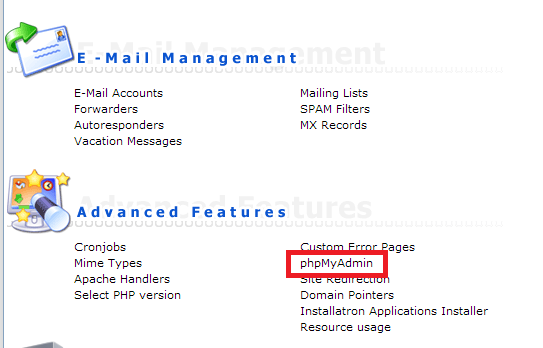 Click on the database tab in the top menu, enter any name you like and click create.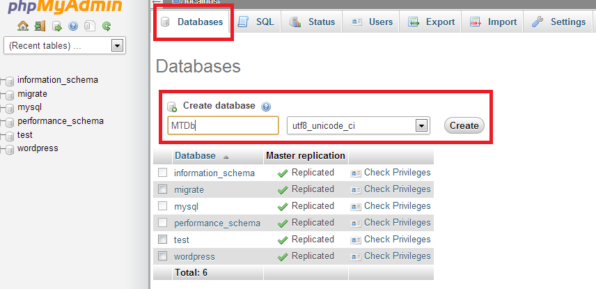
Uploading Files
After creating a database, unzpip the .zip file you donwloaded and upload the contents of Youtubify folder to your servers root folder (usually called www or html or something similar) or a sub-directory, shared hosting providers usually have a web based file manager, but you should use something like Filezilla to do the upload as the web based managers can cause various problems fairly often.
Make sure that application/storage and all the sub-folders are writable by your server (have 777 permissions if you are on shared hosting). You can change files and folders permissions by right-clicking them in the filemanager, clicking file permissions, and then entering 777 in the permissions field.
Installing Youtubify
After you uploaded Youtubify files, simply open up your site url and follow on-screen instructions to finish the installation.
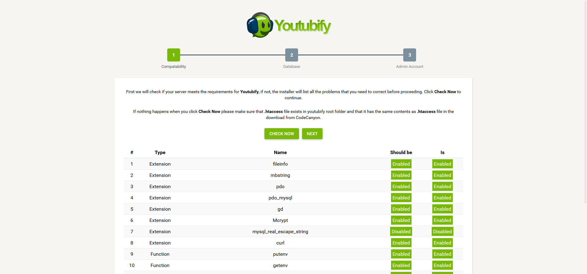Updating Youtubify to new versions
- 1. Extract the .zip file you downloaded.
- 2. Upload and overwrite all the files same way you did when you installed Youtubify.
- 3. Visit http://yoursite.com/update url and click Update Now button.
API Keys
In order make some features of the youtubify work you will need to register for a some API Keys. Check out the sections below for information on how to get them. Once you've got your keys simply enter them in corresponding fields in admin area -> third party services and keys.
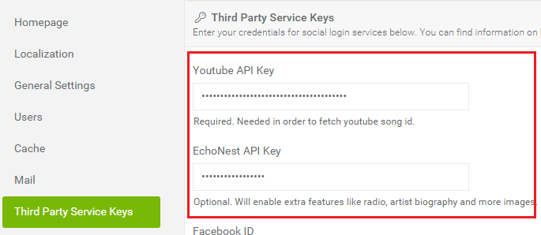Youtube API Key
This key is required in order to play music on youtubify. You can use the same google app you have created for social login and google anlytics (refer to social login google section of the docs). Simply create a new api key from your google project page and enable youtube api from the same page. Note: leave refferers field empty. Then enter this key in admin area > settings > 3rd party keys > Youtube API Key.
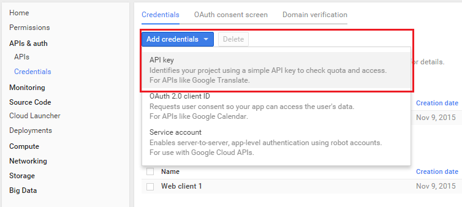

Echonest API Key
This key is optional. When entered it will enable some extra features like artist radio, biography and images. To get echonest api key, register for an account here https://developer.echonest.com/account/register, once you have created an activated our account you will be able to see your api key here https://developer.echonest.com/account/profile, simply enter it in admin area > settings > 3rd party keys > Echonest API Key.
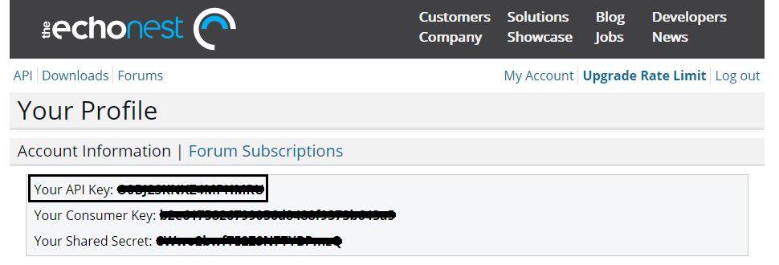Spotify Key and Secret
Spotify keys are optional. When entered it will enable new releases fetching directly from spotify. To get these keys, login or register here, accept all the terms, then create a new application at this url (you can enter anything in name and description fields), then you will be able to see your keys, simply enter them in admin area > settings > 3rd party keys > Spotify ID and Spotify Secret fields.
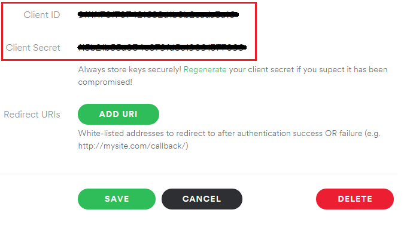In order to make mail work (for password reset and other functions), you will need to register for a mandrill API key. Mandrill is used to avoid the many problems that occur when using public smtp servers (like gmail or your hostings private one). Here's how to get your API key.
If you want to use SMTP instead (or one of the other available options), go to admin area > settings > mail and simply change mandrill to another option and enter any other required details like host, usernamer, password etc.
Register for mandrill api key
To register for mandrill key go to this url, create a new account and then log in. Then click get api keys -> +add api key
 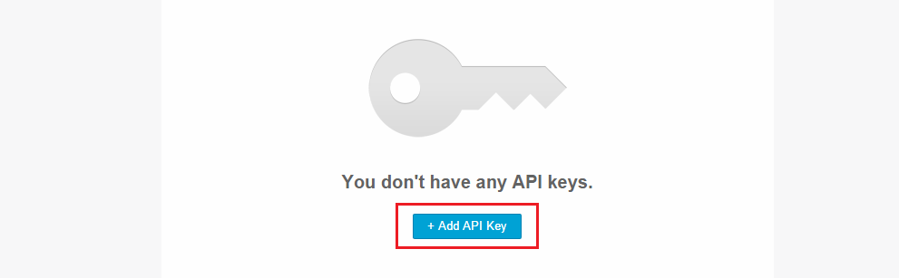
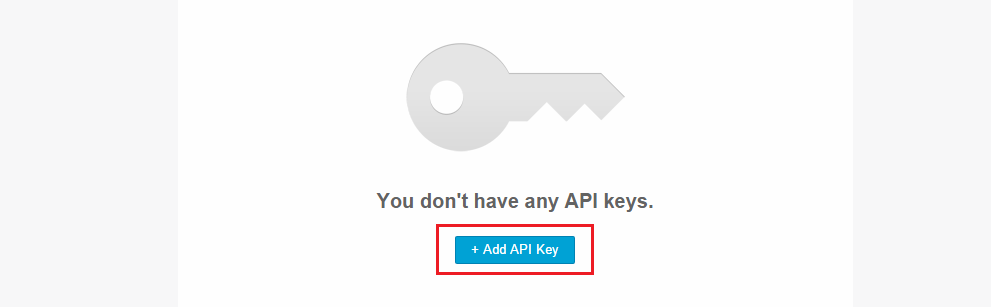
Then simply copy mandrill api key and enter it into corresponding field in admin area > settings > mail
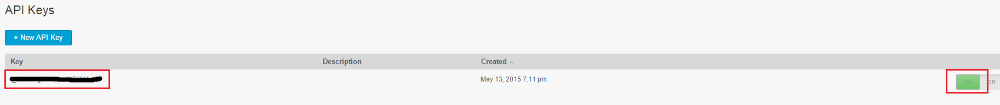 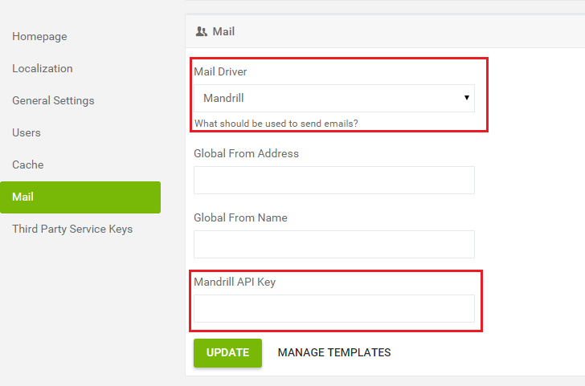Analytics
Registering for google analytics account
Analytics page is powered by google analytics so you will need to register for google analytics and add their supplied code to your site. Here's how to do it.
- 1. Go to this url. You will be prompted to login to your google account or create a new one if you don't have it already. Do it.
- 2. Click on Admin -> Property -> Create new Property -> fill out required fields -> click on get tracking ID 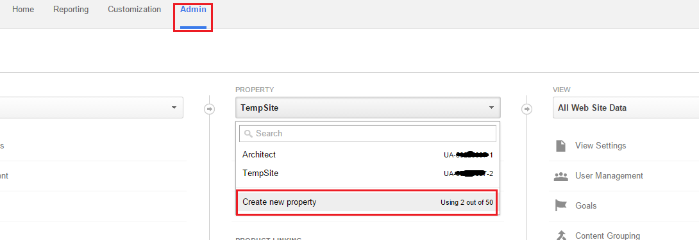 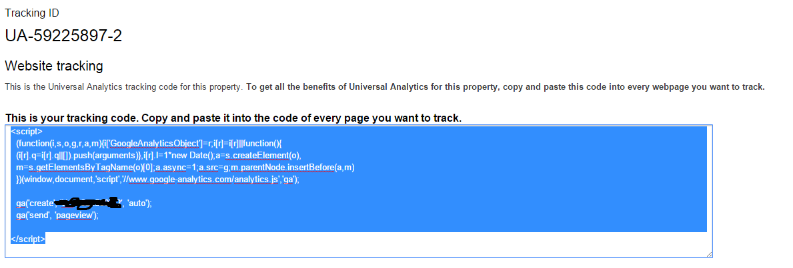
- 3. Go to Admin area -> settings -> third party service keys and paste the code into google analytics tracking code field (only paste in the code that starts with UA, not the whole script). 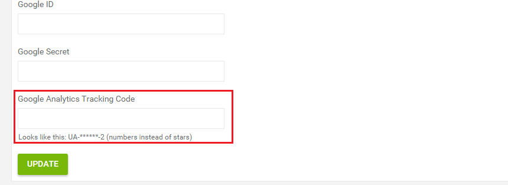
Registering for google ID
You will also need to enter your google ID in the same page for analytics to work. It's the same ID as for google social login so refer to documenation on social login to see how to get that key. Only make sure that enable google analytics API from google developers console and enter your site url in javascript origins field.
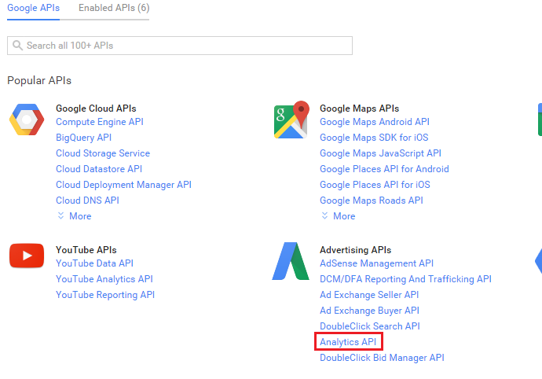 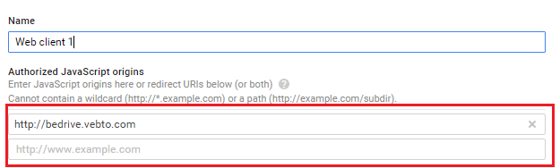Viewing analytics information
Once you have created analytics account and entered it in settings page, go to admin area -> analytics, click on Access google analytics button, then click accept
And you are done. You can now easily view analytics information right from the admin area. You can also select different analytics account, property and view from the bottom of the page.
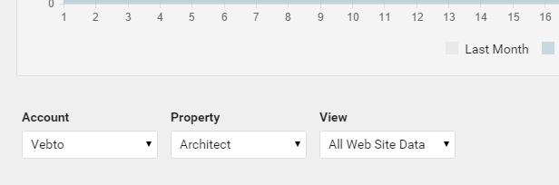Appearence
From appearence page you can modify how your site looks by changing colors, fonts, sizes and more. Simply change the value in the field you want and click save on the right. Youtubify will compile a custom css stylesheet (just as if it was written by a programmer!) without you needing to have any coding knowledge. Original stylesheet will be preserved so you can switch back at any time. You can also create multiple stylesheets(light, dark etc) and switch them at any time from panel on the left. You can also insert custom css, by typing it into custom css panel.
Note that variables and functions might sometimes be used in some of the appearence fields. These are very simple to understand. For example, by default main background color is lighten($main-color, 5%), this simply means that it will take the color value from $main-color field in appearence page (#19191b by default) and make that color 5% lighter.
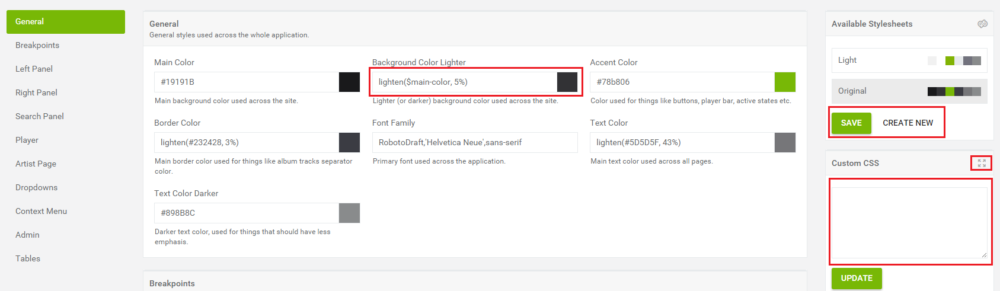Translations
You can translate youtubify right from the admin area so there's no need to mess with configuration files or 3rd party applications. Simpley open translations page and enter your translation for a particular line under translation column in the table.
Note that while you can translate the original (englsish) locale, it is recommended to create a new one (frome the panel on the left) so you don't need to worry about overwriting it with future updates.
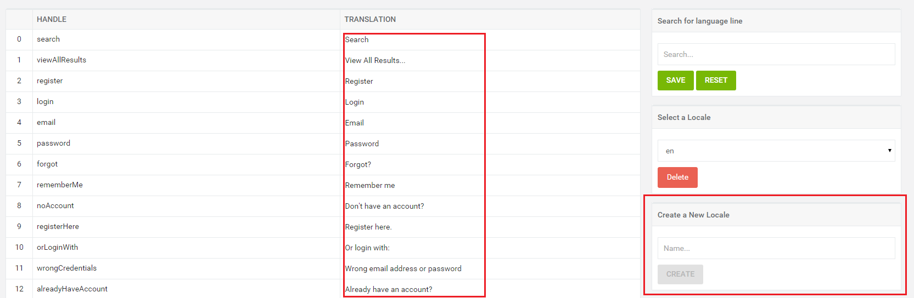Users
From users page, you can get an overview of your site users, create a new one, delete existing ones and edit their profile information.
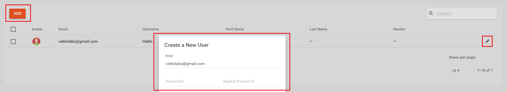Settings
On the settings page you can change various options on your site from your homepage view to user registration. There's a description under each options so you shouldn't have any troubles figuring out which setting does what.
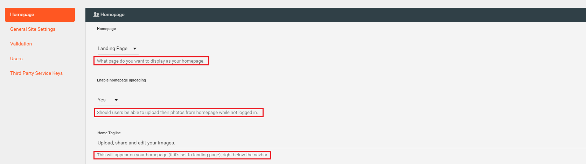Support
If you have any problems or questions, please contact me here https://github.com/kumaranvpl/, thanks!
Social Login
In order make social login (logging in via google, twitter and facebook) work you will need to register for a corresponding app and get that services Client ID and Client Secret. Check out the section for each service for a detailed instruction for how to register and get those tokens. Once you've got your client id and secret simply enter them in corresponding field in admin area -> third party services and keys.
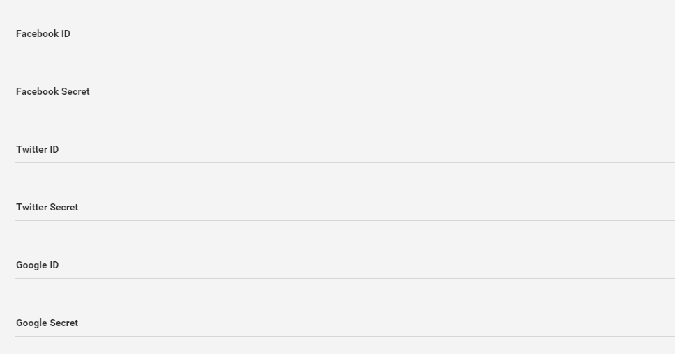